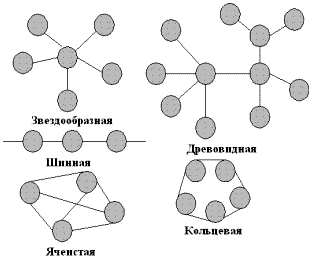
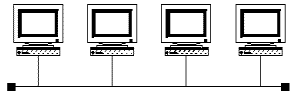
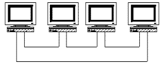
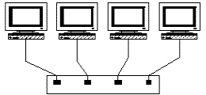
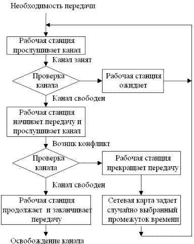
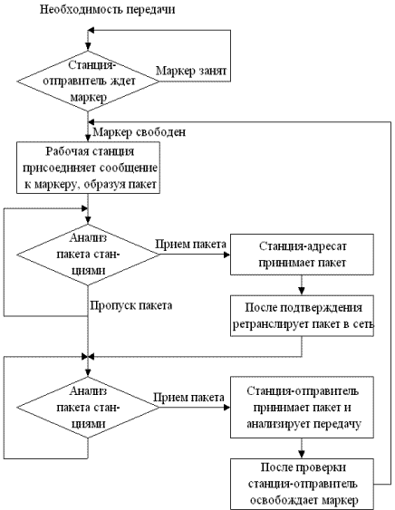
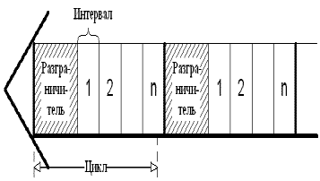
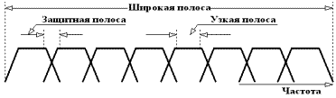

Топология (конфигурация) – это способ соединения компьютеров в сеть. Тип топологии определяет стоимость, защищенность, производительность и надежность эксплуатации рабочих станций, для которых имеет значение время обращения к файловому серверу.
Понятие топологии широко используется при создании сетей. Одним из подходов к классификации топологий ЛВС является выделение двух основных классов топологий: широковещательные и последовательные.
В широковещательных топологиях ПК передает сигналы, которые могут быть восприняты остальными ПК. К таким топологиям относятся топологии: общая шина, дерево, звезда.
В последовательных топологиях информация передается только одному ПК. Примерами таких топологий являются: произвольная (произвольное соединение ПК), кольцо, цепочка.
При выборе оптимальной топологии преследуются три основных цели:
обеспечение альтернативной маршрутизации и максимальной надежности передачи данных;
выбор оптимального маршрута передачи блоков данных;
предоставление приемлемого времени ответа и нужной пропускной способности.
При выборе конкретного типа сети важно учитывать ее топологию. Основными сетевыми топологиями являются: шинная (линейная) топология, звездообразная, кольцевая и древовидная.
Например, в конфигурации сети ArcNet используется одновременно и линейная, и звездообразная топология. Сети Token Ring физически выглядят как звезда, но логически их пакеты передаются по кольцу. Передача данных в сети Ethernet происходит по линейной шине, так что все станции видят сигнал одновременно.
|  |
|
Рис. 4.1 Типы топологий |
Существуют пять основных топологий (рис. 4.1):
Общая шина это тип сетевой топологии, в которой рабочие станции расположены вдоль одного участка кабеля, называемого сегментом.
|
 |
|
Рис. 4.2 Топология Общая шина |
Топология Общая шина (рис. 4.2) предполагает использование одного кабеля, к которому подключаются все компьютеры сети. В случае топологии Общая шина кабель используется всеми станциями по очереди. Принимаются специальные меры для того, чтобы при работе с общим кабелем компьютеры не мешали друг другу передавать и принимать данные. Все сообщения, посылаемые отдельными компьютерами, принимаются и прослушиваются всеми остальными компьютерами, подключенными к сети. Рабочая станция отбирает адресованные ей сообщения, пользуясь адресной информацией. Надежность здесь выше, так как выход из строя отдельных компьютеров не нарушит работоспособность сети в целом. Поиск неисправности в сети затруднен. Кроме того, так как используется только один кабель, в случае обрыва нарушается работа всей сети. Шинная топология - это наиболее простая и наиболее распространенная топология сети.
Примерами использования топологии общая шина является сеть 10Base–5 (соединение ПК толстым коаксиальным кабелем) и 10Base–2 (соединение ПК тонким коаксиальным кабелем).
|
 |
|
Рис. 4.3 Топология Кольцо |
Кольцо – это топология ЛВС, в которой каждая станция соединена с двумя другими станциями, образуя кольцо (рис.4.3). Данные передаются от одной рабочей станции к другой в одном направлении (по кольцу). Каждый ПК работает как повторитель, ретранслируя сообщения к следующему ПК, т.е. данные, передаются от одного компьютера к другому как бы по эстафете. Если компьютер получает данные, предназначенные для другого компьютера, он передает их дальше по кольцу, в ином случае они дальше не передаются. Очень просто делается запрос на все станции одновременно. Основная проблема при кольцевой топологии заключается в том, что каждая рабочая станция должна активно участвовать в пересылке информации, и в случае выхода из строя хотя бы одной из них, вся сеть парализуется. Подключение новой рабочей станции требует краткосрочного выключения сети, т.к. во время установки кольцо должно быть разомкнуто. Топология Кольцо имеет хорошо предсказуемое время отклика, определяемое числом рабочих станций.
Чистая кольцевая топология используется редко. Вместо этого кольцевая топология играет транспортную роль в схеме метода доступа. Кольцо описывает логический маршрут, а пакет передается от одной станции к другой, совершая в итоге полный круг. В сетях Token Ring кабельная ветвь из центрального концентратора называется MAU (Multiple Access Unit). MAU имеет внутреннее кольцо, соединяющее все подключенные к нему станции, и используется как альтернативный путь, когда оборван или отсоединен кабель одной рабочей станции. Когда кабель рабочей станции подсоединен к MAU, он просто образует расширение кольца: сигналы поступают к рабочей станции, а затем возвращаются обратно во внутреннее кольцо.
|  |
| Рис. 4.4 Топология Звезда |
Звезда – это топология ЛВС (рис.4.4), в которой все рабочие станции присоединены к центральному узлу (например, к концентратору), который устанавливает, поддерживает и разрывает связи между рабочими станциями. Преимуществом такой топологии является возможность простого исключения неисправного узла. Однако, если неисправен центральный узел, вся сеть выходит из строя.
В этом случае каждый компьютер через специальный сетевой адаптер подключается отдельным кабелем к объединяющему устройству. При необходимости можно объединять вместе несколько сетей с топологией Звезда, при этом получаются разветвленные конфигурации сети. В каждой точке ветвления необходимо использовать специальные соединители (распределители, повторители или устройства доступа).
Примером звездообразной топологии является топология Ethernet с кабелем типа Витая пара 10BASE-T, центром Звезды обычно является Hub.Звездообразная топология обеспечивает защиту от разрыва кабеля. Если кабель рабочей станции будет поврежден, это не приведет к выходу из строя всего сегмента сети. Она позволяет также легко диагностировать проблемы подключения, так как каждая рабочая станция имеет свой собственный кабельный сегмент, подключенный к концентратору. Для диагностики достаточно найти разрыв кабеля, который ведет к неработающей станции. Остальная часть сети продолжает нормально работать.
Однако звездообразная топология имеет и недостатки. Во-первых, она требует много кабеля. Во-вторых, концентраторы довольно дороги. В-третьих, кабельные концентраторы при большом количестве кабеля трудно обслуживать. Однако в большинстве случаев в такой топологии используется недорогой кабель типа витая пара. В некоторых случаях можно даже использовать существующие телефонные кабели. Кроме того, для диагностики и тестирования выгодно собирать все кабельные концы в одном месте. По сравнению с концентраторами ArcNet концентраторы Ethernet и MAU Token Ring достаточно дороги. Новые подобные концентраторы включают в себя средства тестирования и диагностики, что делает их еще более дорогими.
Метод доступа – это способ определения того, какая из рабочих станций сможет следующей использовать ЛВС. То, как сеть управляет доступом к каналу связи (кабелю), существенно влияет на ее характеристики. Примерами методов доступа являются:
множественный доступ с прослушиванием несущей и разрешением коллизий (Carrier Sense Multiple Access with Collision Detection – CSMA/CD);
множественный доступ с передачей полномочия (Token Passing Multiple Access – TPMA) или метод с передачей маркера;
множественный доступ с разделением во времени (Time Division Multiple Access – TDMA);
множественный доступ с разделением частоты (Frequency Division Multiple Access – FDMA) или множественный доступ с разделением длины волны (Wavelength Division Multiple Access – WDMA).
Алгоритм множественного доступа с прослушиванием несущей и разрешением коллизий приведен на рис. 4.5.
|  |
|
Рис. 4.5 Алгоритм CSMA/CD |
Метод множественного доступа с прослушиванием несущей и разрешением коллизий (CSMA/CD) устанавливает следующий порядок: если рабочая станция хочет воспользоваться сетью для передачи данных, она сначала должна проверить состояние канала: начинать передачу станция может, если канал свободен. В процессе передачи станция продолжает прослушивание сети для обнаружения возможных конфликтов. Если возникает конфликт из-за того, что два узла попытаются занять канал, то обнаружившая конфликт интерфейсная плата, выдает в сеть специальный сигнал, и обе станции одновременно прекращают передачу. Принимающая станция отбрасывает частично принятое сообщение, а все рабочие станции, желающие передать сообщение, в течение некоторого, случайно выбранного промежутка времени выжидают, прежде чем начать сообщение.
Все сетевые интерфейсные платы запрограммированы на разные псевдослучайные промежутки времени. Если конфликт возникнет во время повторной передачи сообщения, этот промежуток времени будет увеличен. Стандарт типа Ethernet определяет сеть с конкуренцией, в которой несколько рабочих станций должны конкурировать друг с другом за право доступа к сети.
Алгоритм множественного доступа с передачей полномочия, или маркера, приведен на рис. 4.6.
|  |
|
Рис. 4.6 Алгоритм TPMA |
Метод с передачей маркера – это метод доступа к среде, в котором от рабочей станции к рабочей станции передается маркер, дающий разрешение на передачу сообщения. При получении маркера рабочая станция может передавать сообщение, присоединяя его к маркеру, который переносит это сообщение по сети. Каждая станция между передающей станцией и принимающей видит это сообщение, но только станция – адресат принимает его. При этом она создает новый маркер.
Маркер (token), или полномочие, – уникальная комбинация битов, позволяющая начать передачу данных.
Каждый узел принимает пакет от предыдущего, восстанавливает уровни сигналов до номинального уровня и передает дальше. Передаваемый пакет может содержать данные или являться маркером. Когда рабочей станции необходимо передать пакет, ее адаптер дожидается поступления маркера, а затем преобразует его в пакет, содержащий данные, отформатированные по протоколу соответствующего уровня, и передает результат далее по ЛВС.
Пакет распространяется по ЛВС от адаптера к адаптеру, пока не найдет своего адресата, который установит в нем определенные биты для подтверждения того, что данные достигли адресата, и ретранслирует его вновь в ЛВС. После чего пакет возвращается в узел из которого был отправлен. Здесь после проверки безошибочной передачи пакета, узел освобождает ЛВС, выпуская новый маркер. Таким образом, в ЛВС с передачей маркера невозможны коллизии (конфликты). Метод с передачей маркера в основном используется в кольцевой топологии.
Данный метод характеризуется следующими достоинствами:
гарантирует определенное время доставки блоков данных в сети;
дает возможность предоставления различных приоритетов передачи данных.
Вместе с тем он имеет существенные недостатки:
в сети возможны потеря маркера, а также появление нескольких маркеров, при этом сеть прекращает работу;
включение новой рабочей станции и отключение связаны с изменением адресов всей системы.
Множественный доступ с разделением во времени основан на распределении времени работы канала между системами (рис.4.7).
Доступ TDMA основан на использовании специального устройства, называемого тактовым генератором. Этот генератор делит время канала на повторяющиеся циклы. Каждый из циклов начинается сигналом Разграничителем. Цикл включает n пронумерованных временных интервалов, называемых ячейками. Интервалы предоставляются для загрузки в них блоков данных.
|
 |
|
Рис. 4.7 Структура множественного доступа с разделением во времени |
Первый (простейший) вариант использования интервалов заключается в том, что их число (n) делается равным количеству абонентских систем, подключенных к рассматриваемому каналу. Тогда во время цикла каждой системе предоставляется один интервал, в течение которого она может передавать данные. При использовании рассмотренного метода доступа часто оказывается, что в одном и том же цикле одним системам нечего передавать, а другим не хватает выделенного времени. В результате – неэффективное использование пропускной способности канала.
Второй, более сложный, но высокоэкономичный вариант заключается в том, что система получает интервал только тогда, когда у нее возникает необходимость в передаче данных, например при асинхронном способе передачи. Для передачи данных система может в каждом цикле получать интервал с одним и тем же номером. В этом случае передаваемые системой блоки данных появляются через одинаковые промежутки времени и приходят с одним и тем же временем запаздывания. Это режим передачи данных с имитацией коммутации каналов. Способ особенно удобен при передаче речи.
Доступ FDMA основан на разделении полосы пропускания канала на группу полос частот (Рис. 4.8), образующих логические каналы.
Широкая полоса пропускания канала делится на ряд узких полос, разделенных защитными полосами. Размеры узких полос могут быть различными.
При использовании FDMA, именуемого также множественным доступом с разделением волны WDMA, широкая полоса пропускания канала делится на ряд узких полос, разделенных защитными полосами. В каждой узкой полосе создается логический канал. Размеры узких полос могут быть различными. Передаваемые по логическим каналам сигналы накладываются на разные несущие и поэтому в частотной области не должны пересекаться. Вместе с этим, иногда, несмотря на наличие защитных полос, спектральные составляющие сигнала могут выходить за границы логического канала и вызывать шум в соседнем логическом канале.
|
 |
|
Рис. 4.8 Схема выделения логических каналов |
В оптических каналах разделение частоты осуществляется направлением в каждый из них лучей света с различными частотами. Благодаря этому пропускная способность физического канала увеличивается в несколько раз. При осуществлении этого мультиплексирования в один световод излучает свет большое число лазеров (на различных частотах). Через световод излучение каждого из них проходит независимо от другого. На приемном конце разделение частот сигналов, прошедших физический канал, осуществляется путем фильтрации выходных сигналов.
Метод доступа FDMA относительно прост, но для его реализации необходимы передатчики и приемники, работающие на различных частотах.
Что такое топология?
Перечислить наиболее используемые типы топологий?
Охарактеризовать топологию Общая шина и привести примеры использования данной топологии.
Какие сетевые технологии используют топологию Общая шина?
Охарактеризовать топологию Кольцо и привести примеры этой топологии.
В каких случаях используют топологию Кольцо?
Охарактеризовать топологию Звезда и привести примеры использования этой топологии.
К какой топологии относится сеть при подсоединении всех компьютеров к общему концентратору?
Привести примеры и охарактеризовать древовидную топологию.
Что такое ячеистая топология и в каких случаях она используется?
Что такое метод доступа и как влияет метод доступа на передачу данных в сети?
Какие существуют методы доступа?
Охарактеризовать метод доступа с прослушиванием несущей и разрешением коллизий.
При каком методе доступа обе станции могут одновременно начать передачу и войти в конфликт?
В каких сетевых технологиях используется метод CSMA/CD?
Охарактеризовать метод доступа с разделением во времени и перечислить в каких случаях используется данный метод.
Что такое маркер?
В каком случае рабочая станция может начать передачу данных при использовании метода доступа с передачей полномочия?
Охарактеризовать метод доступа с передачей полномочия.
Охарактеризовать метод множественного доступа с разделением частоты.
Какие существуют варианты использования множественного доступа с разделением во времени?